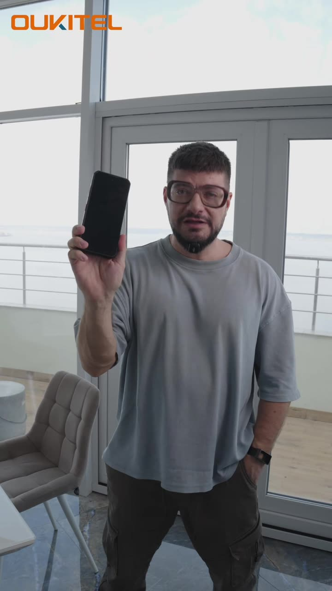
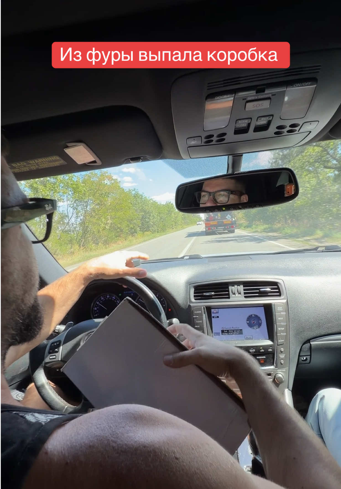
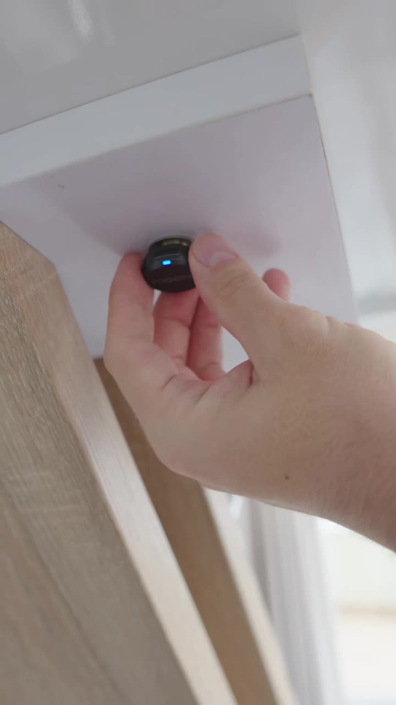

59Mviews
1.6Minteractions
18,295net new followers

ILUSHA HELP / CREATOR MEDIA KIT
I create practical life hacks and hands-on demonstrations of useful tech and household products. Real products, tested and explained on camera.
Russian-language videos · English-language collaboration

Four platform snapshots · Original July–August 2026 media kit
Historical total views, not unique reach or a campaign forecast. Reporting windows differ; repeat views and cross-platform overlap are included. Dates & definitions ↗
01 / PLATFORM ANALYTICS
Actual screens from the original media kit, with the figures and dates kept in context. Open any screenshot to inspect the original image.

The view total was recorded under the source’s 9 July–8 August 2026 heading. The screenshots below show viewers and top-post results separately; they are not screenshots of the 31.8M total.


YOUTUBE / SOURCE MEDIA KIT
Recorded in the original kit under its 9 July–8 August 2026 heading. A screenshot of this total was not included in the supplied source.
View channel ↗Across eight selected TikTok product videos.
Historical results, recorded 16 September 2026.
02 / SELECTED PRODUCT WORK
Hands-on tech and real product collaborations.
Watch the original videos and their recorded results.
A closer look at the product.

FOOD / EVERYDAY STORIES1.1MTIKTOK VIEWSAn original delivery-service collaboration.
From the first look
to the real-life test.

AUDIO / UP CLOSE715KTIKTOK VIEWSSmall details. On camera.
* Sum of the eight rounded view counts in the original media kit, recorded 16 Sep 2026. Selected examples; results vary. Sources & definitions ↗
A CLOSER LOOK / 28 OCT 2026
A recent product story.
Two platforms. Separate results.
Creator-supplied screenshots, reviewed 28 Oct 2026. These are recorded figures, not live counters. About this evidence ↗
03 / AUDIENCE EVIDENCE
Russian-language content across countries. These original screenshots describe historical TikTok viewers and Facebook followers — different audiences, clearly separated.
Ukraine 35.9% · Kazakhstan 17.2%
Belarus 15.1% · Russia 14.8%

25–34: 29.9% · 18–24: 21.8%
35–44: 20.9%

Ukraine 56.1% · Georgia 9.4%
Russia 5.5%

All seven original analytics screenshots are preserved on this page. Account views, viewers and followers are different measures. Read the measurement notes ↗
04 / HOW WE WORK
Concept, filming and editing in-house.
A clear brief at the start. A shared plan before the camera rolls.
Tell me about the product, audience and goal. We agree the platform, scope and usage.
The product arrives. I test it, develop the idea, then film and edit the agreed content.
We agree the publishing schedule after the brief and product testing, then review the results.
05 / COLLABORATION FORMATS
Start with the story and the right platform.
A tailored proposal follows a conversation about your brief.
The creative idea, deliverables, approval process, product testing and publishing schedule. I’ll prepare a tailored proposal once we’ve discussed your product and your goal.
Standard collaborations are non-exclusive. Paid advertising rights, exclusivity and raw files are agreed separately.
Yes. Share the product range, goals and proposed schedule. We’ll shape the format and the publishing plan around the partnership.
YOUR NEXT COLLABORATION STARTS HERE
@ilusha_helpSend the product, your goal and the timing you have in mind.
ilushahelp@gmail.com ↗